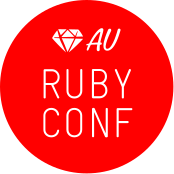

Continuing with Ruby
If you've participated in a Rails Girls event before, we hope you'll join us for a one-day extension workshop - focussed on honing your skills.
You learn more about Ruby, how the internet works, and test driven development.
You need your own laptop, curiosity and a sprinkle of imagination!
Want to help? We are looking for volunteers and Rails coaches. Email us.
| 9:30 - 09:45 |
Registration and coffeeDuring the morning we'll have some coffee, thanks to Ruby Conf AU, so that we're all set for a great day of Rails Girls! |
|---|---|
| 09:45 - 10:00 |
WelcomeOutline of the day - since you have Ruby installed already, we can jump right into it. We've broken the day down into 3 exercises so you can practice a few different things. There's no particular order, the list below is just a possible outline. |
| 10:00 - 11:30 |
Coding with RubyAt Rails Girls you got to play with Ruby a bit, but now it's time to really understand some of its features and syntax. |
| 11:45 - 13:00 |
Fun with SinatraTo give you a better foundation about how the web works, you'll build a simple website using Sinatra. It will be more hands-on than your original Rails Girls site, so be ready to write some code! |
| 13:00 - 14:00 |
LunchDelicious food from Ruby Conf AU. |
| 14:00 - 15:30 |
Test Driven DevelopmentLearn a new way to code (and avoid errors!) by writing tests as you go. |
| 15:30 - 16:00 |
RetroWe'll go over everything we did for the day, and hear about your experiences from the day. |
Location: The Vibe Hotel 88 Alfred St S, Milsons Point
Rails Girls Next has partnered with:
 Ruby Conf Australia: bringing the leading developers from around the region and beyond together for the second Ruby conference to be held in Australia.
The Workbench is a space where you can get work done and be surrounded by the best kind of coworkers: people creating interesting things.
 reInteractive is Australia's largest Ruby on Rails focused web development company. We make results driven web sites, guaranteed.
reInteractive is Australia's largest Ruby on Rails focused web development company. We make results driven web sites, guaranteed.
How much does the workshop cost? Nothing; it's free! You just need to be excited!
Will there be coffee? Hells yeah.
Who is this aimed at? Women who have previously done a Rails Girls workshop. Please bring your laptop.
I know how to program - How can I help? We're also looking for people to be coaches. We'll have a two-three hour workshop before the event to walk you through the curriculum. Email us
TBA